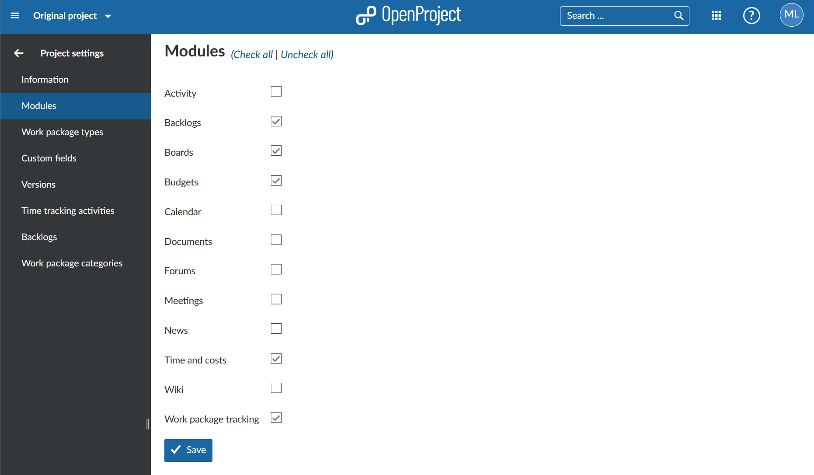

To activate or deactivate modules in a project select a project from the select a project drop-down menu in the left header navigation and choose -> Project settings -> Modules.
Setting a check mark next to a project module, the module will be enabled in the project and a new menu item will appear in the project menu.

Visit our user guide overview to choose an explanation of the different modules in OpenProject.